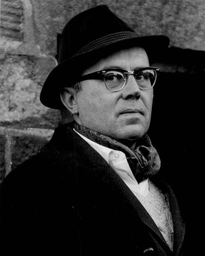

Ideologies / Conservative
What is Traditionalist Conservatism?
Traditionalist Conservatism is a political ideology in the Conservative family. Kirk traced a line of thought from Burke onward and reduced it to a set of canons. Society rests on a transcendent moral order, so political problems are at root religious and moral ones. He defends the variety and mystery of inherited ways of life against uniformity, holds that civilisation needs orders and classes, ties freedom to private property, trusts custom and prescription over abstract design, and accepts change only when it is prudent.
A transcendent moral order, and the permanent things that rest on it.
Defined from: Russell Kirk, The Conservative Mind (1953)
See how close you are to Traditionalist Conservatism Dare a friend to answer as one


Where Traditionalist Conservatism stands on 13 axes
Each axis runs from 0 to 100. A score of 50 is the middle. On a classic compass it sits in the Libertarian Right quadrant.
| Axis | Position | Score | In words |
|---|---|---|---|
| EconomyMarket to Planned | 30 | Strongly Market | |
| OwnershipPrivate to Collective | 10 | Very strongly Private | |
| RightsLiberty to Security | 45 | Balanced | |
| GovernmentDemocracy to Autocracy | 45 | Balanced | |
| StructureDecentralised to Centralised | 25 | Strongly Decentralised | |
| NationInternationalist to Nationalist | 55 | Balanced | |
| ImmigrationMulticulturalist to Assimilationist | 65 | Leans Assimilationist | |
| ValuesProgressive to Traditional | 95 | Very strongly Traditional | |
| TechnologyAccelerationist to Precautionary | 75 | Strongly Precautionary | |
| EnvironmentIndustrialist to Environmentalist | 55 | Balanced | |
| ReligionSecular to Religious | 90 | Very strongly Religious | |
| MilitaryPacifist to Militarist | 40 | Leans Pacifist | |
| TradeFree Trade to Protectionist | 45 | Balanced |
Ideologies closest to Traditionalist Conservatism
- Burkean Conservatism89% alike
- Postliberalism87% alike
- Compassionate Conservatism86% alike
- Catholic Social Teaching85% alike
- Crunchy Conservatism85% alike
Its opposite on this map is Posadism, at 23%.
Parties near Traditionalist Conservatism
- Anti Revolutionary PartyNetherlands. Our Programme (1879)89% alike
- Centre PartyGermany. The Soest Programme (1870)86% alike
- Pakistan Tehreek e InsafPakistan. Shandaar Pakistan, Shandaar Mustaqbil (2024)80% alike
- Italian People's PartyItaly. Appeal to the Free and Strong (1919)79% alike
Common questions
What is Traditionalist Conservatism?
Traditionalist Conservatism is a political ideology in the Conservative family. Kirk traced a line of thought from Burke onward and reduced it to a set of canons. Society rests on a transcendent moral order, so political problems are at root religious and moral ones. He defends the variety and mystery of inherited ways of life against uniformity, holds that civilisation needs orders and classes, ties freedom to private property, trusts custom and prescription over abstract design, and accepts change only when it is prudent.
What does Traditionalist Conservatism believe?
In one line: A transcendent moral order, and the permanent things that rest on it. Its strongest positions are Traditional, Private, Religious. Kirk traced a line of thought from Burke onward and reduced it to a set of canons. Society rests on a transcendent moral order, so political problems are at root religious and moral ones. He defends the variety and mystery of inherited ways of life against uniformity, holds that civilisation needs orders and classes, ties freedom to private property, trusts custom and prescription over abstract design, and accepts change only when it is prudent.
Who founded Traditionalist Conservatism?
Traditionalist Conservatism is defined here from The Conservative Mind (1953) by Russell Kirk. The thinker most tied to it is Russell Kirk (1918 to 1994).
Is Traditionalist Conservatism left wing or right wing?
On a classic two axis compass Traditionalist Conservatism falls in the Libertarian Right quadrant, which means the economic right and the libertarian side. Left and right hide a lot, though, which is why EthosScales scores it on thirteen separate axes.
How is Traditionalist Conservatism different from Burkean Conservatism?
They are close: 89% alike. The biggest gaps are on Structure, where Traditionalist Conservatism scores 25 and Burkean Conservatism scores 40, and Military, where Traditionalist Conservatism scores 40 and Burkean Conservatism scores 55. On each axis, 0 is one end and 100 is the other.
Think this is wrong? Suggest a correction. The scores are editorial estimates.